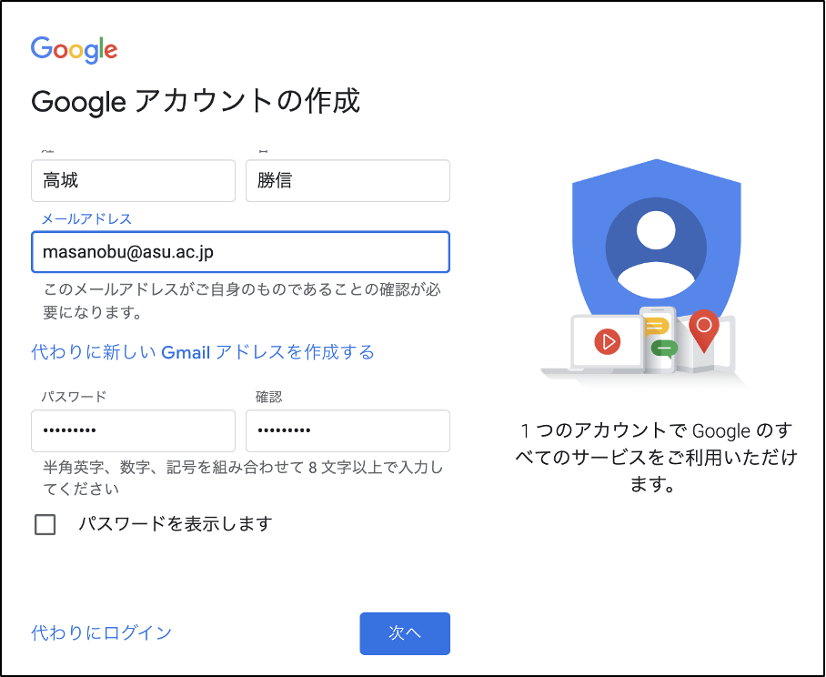

本書のコンセプト
最近はコロナの影響もあり、在宅勤務が推奨され、学校の授業がオンライン化され、買い物はeコマースの利用が増加し、食事の際は出前アプリの利用が流行っています。コロナ以前から社会生活におけるデジタル化の必要性がうたわれていましたが、コロナ渦となり、あらゆる生活シーンでオンライン利用が半強制化され、便利で使いやすいオンラインサービスに対する需要が増しています。
また最近のシステム開発の動きを見ると、いままで「使いづらい」の代名詞であった行政や金融のオンラインサービスに「ユーザ中心設計」を採用し、使いやすくセキュリティ上も安全なサービスに作り替えようとする取組が進められています。またIT化が比較的遅れていた中小企業においてもDX（デジタルトランスフォーメーション）を促進しようとする動きがあります。
このように、あらゆる業界や組織において、あらゆる生活シーンでそれぞれの立場の要望にあった使いやすいオンラインサービスが安価に構築・提供されることが求められています。
一方これらの要望を担う人材育成の観点では、子供から大人までプログラミング教育がはやっており、例えば文科省は小学校でのプログラミング授業を必須化しています。しかしシステム開発や人材育成においては下記のような課題があると感じています。

- アプリ開発の要件定義や設計フェーズにおいて画面設計に走りがちで、データ構造やロジックの設計がおろそかになり、プログラマーがまともに開発をはじめらずプロジェクトが遅延するといった状況に陥りがちです。このような状況は「デスマーチ」と呼ばれ、20年近くIT企業でアプリ開発をみてきましたが、昔も今もこのような破綻したプロジェクトは大量に発生しています。
- この原因としては、システムデザインについての手法（ドメイン駆動設計やシステムアーキテクチャなど）やその説明が高尚で難しいという問題があります。そのため、本来必要なシステムデザインがスルーされ、スケジュールのプレッシャーもあり、とりあえず簡易な画面設計に走ることにつながるのではと感じています。
- 昨今の人間中心設計の誤った解釈から、システムの顧客接点である画面のデザインがフォーカスされ、発注側の要件定義担当者やデザイナーを含めたプロジェクトメンバーが、本来画面設計の元になるはずのデータモデリングについて理解が乏しいことに原因があるのではとも感じています。例えば、人間中心設計のプロセスで作成するカスタマージャーニーマップはユーザ視点の顧客体験を理解し、開発するシステムが単なる静的なインタフェースではなく動的なサービスであることを表現するにはよいのですが、アーキテクト不在の場合、顧客接点の整理をしたらすぐに画面設計にとりかかろうという雰囲気になりがちなので、意識して気をつける必要があります。
- 例えば、過去相談を受けたシステム開発プロジェクトに、業務で扱う情報が整理できておらず各業務ステップで担当者が手動で作業をしているため、残業が減らないのでシステム化して改善したい、というものがありました。ここでもアーキテクト不在で要件定義が進められ、プロジェクトマネージャやデザイナーが画面設計に走り、案の定プロジェクトの半年後はじめからやりなおしになりました。システム化とは業務と情報の整理整頓であり、仕事が複雑になり残業が発生するのもその整理整頓ができていないのがそもそもの原因です。そのため、まずはデータモデリングが必要であることを強く意識しておく必要があるでしょう。
- エンジニア育成という観点からは、従来のプログラミングの学習コンテンツはプログラミング言語の文法を学ぶことが目標となっており、出来上がったプログラムが端末に"Hello World"と表示するといった面白みにかけ作りたいものからかけ離れた学習内容になっていることが多いです。そのため学習自体に面白味がなく、初心者の時点からやる気をなくしてしまいます。
- 最近の子供向けプログラミング授業用ソフトは使いやすく、見た目がよく、マウス操作でプログラミングの論理的思考が学べるといったすぐれた面がある一方、汎用的なアプリケーションを開発するため使えないといった欠点もあります。学習指導要領上、小学校からプログラミング教育が必須化する理由は「プログラミング的思考をやしなうため」「順序立てて考え、試行錯誤し、ものごとを解決する力を身につけるため」であることはわかるのですが、教科書で決められた作り込まれたソフトを使っているので汎用性がなく学習した後のその先がないため少し残念です。
以上のことから、エンジニアだけでなく発注側顧客企業の担当者やプロジェクトマネージャもユースケースからデータモデルに落とす考え方やデータモデルから画面設計を行うための考え方、さらにはこれらのパターンを知っていることが望まれます。
そこで本書では。またエンジニア育成という観点では、アイデアが浮かんだらすぐに完成品までもっていけるよう効率的で汎用的なノーコードアプリであるFlutterFlowを選び、それらのハンズオンを掲載しています。
様々な立場の人が本書を読みハンズオンを試してもらうことで「こんなに簡単に作れるんだ」とものづくりに興味をもってもらい、自分たちが実現したいシステムを自らが構築するマインドをもっていただく一助になればと思っています。また本書をとおしてIT技術の活用が民主化されることで、自らの会社や組織、業界においてより価値を産むアイデア考察に積極的になり、それらを自ら実現した便利で使いやすいオンラインサービスが世に増えることを願っています。
本書で学ぶこと
- GoogleやFlutterFlowの無料アカウントの登録方法とログインのしくみ
- FlutterFlowの基本的な使い方
- マテリアルデザインをベースとした画面デザイン
- Firebaseの主要サービスの使い方（認証とNoSQLデータベース、通知機能など）
- 世の中にある主要なアプリケーションパターンとFlutterFlowを使った実装
ライセンス
Copyright 2021 RISA Co., LTD.
GoogleはGmailやGoogleスプレッドシート等々Webから利用可能な有益なアプリケーションを無料で提供しています。強靭で使いやすいセキュリティ基盤の上にこれらのサービスが提供されており、Gmailアカウントを作成することなく自分が持っている既存のメールアドレスを使ってGoogleアカウントを作成することができますので、大学のメールアドレスを使ってGoogleアカウントを追加するなどして授業にも利用することもできます。ここでは、既存のメールアドレスを使ってGoogleアカウントを作成する手順を紹介します。
1. Googleアカウント作成URLにアクセス
Googleアカウントを作成する下記URLにアクセスします。
https://accounts.google.com/signup/v2/webcreateaccount?flowName=GlifWebSignIn&flowEntry=SignUp
2. Googleアカウントの作成
「姓」「名」に自分の名前を入れて、「代わりに現在のメールアドレスを使用」を選択してメールアドレスに自分のメアドを入力して、パスワードを入力して「次へ」ボタンをクリックします。

3. アカウント作成完了
自分のメアドに送られてきたメールに記載された数字をメモして、次画面に入力するとアカウント作成が完了します。
4. Googleアカウント
下記URLにアクセスして画面右上の「Googleアカウントに移動」ボタンをクリックして、登録したASUメアドとパスワードでログインします。
Copyright 2020 RISA Co., LTD.
FlutterFlowにGoogleアカウントのユーザを登録します。
1. FlutterFlowのページにアクセス
下記URLにアクセスして画面右上の「Start for free」ボタンをクリックします。

2. Googleアカウントでユーザ登録
「Create Account」画面が表示されますので、画面下の「Google」ボタンをクリックします。

3. Googleアカウントでユーザ登録
Googleログインのダイアログが表示されるので、そこからASUメアドを選択します。

次ページでアンケートを聞かれることがあるので適当にチェックを入れて回答します。
登録が完了すると「Welcome to FlutterFlow」という画面が表示されます。
Copyright 2021 RISA Co., LTD.
eコマースサイトやチャットアプリなどユーザの区別が必要だったり、秘匿情報を扱うアプリケーションではユーザ登録とログインが必要であるため、アプリケーションの基本はログイン画面です。ここではFirebaseが提供する認証のしくみとFlutterFlowを組み合わせたログインアプリを作成します。
前提条件
- Firebaseと連携したFlutterFlowのプロジェクトが作成されていること。
1. FlutterFlowにログインする
下記URLにアクセスして「Google」ボタンをクリックしてログインする。

2. FlutterFlowプロジェクトの選択
FlutterFlowのダッシュボード上で「ASU...」から始まる名前のプロジェクトを選択します。
3. 「UI Builder」でログイン画面を作成
ログインすると下図の画面（UIビルダー）が表示されるので、左側のパレット上にあるアイコンを中央の画面にドラッグ＆ドロップしながらログイン画面を作成していきます。
① Row  アイコンを中央のアプリ画面の白いエリア（Column（カラム））にドラッグ＆ドロップします。
アイコンを中央のアプリ画面の白いエリア（Column（カラム））にドラッグ＆ドロップします。

② もう一度Rowアイコンを中央のアプリ画面の白いエリア（Column（カラム））にドラッグ＆ドロップし、二行にします。
③ ボタン  アイコンを二行のRowアイコンの下にドラッグ＆ドロップします（ボタンアイコンは左側のアイコンリストをスクロールすると下の方にあります）。
アイコンを二行のRowアイコンの下にドラッグ＆ドロップします（ボタンアイコンは左側のアイコンリストをスクロールすると下の方にあります）。

④アプリ画面の白い部分をクリックしColumnを選択して右側のパレットに注目します。

⑤ Main Axis Alignmentで左から二番目のアイコンを選択し、上記でドラッグ＆ドロップしたコンポーネントを上下中央に配置します。

⑥ パレット上部のPadding（パディング）で真ん中のロックをクリックしてロック上部に10と入力して上下左右4ヶ所すべてを10に設定します。

⑦以上により下記のような配置になります。

⑧左のパレットからText  アイコンを2行のRowの左側に配置します。上下2ヶ所に配置します。
アイコンを2行のRowの左側に配置します。上下2ヶ所に配置します。

⑨左パレットのTextField アイコンを、さきほど配置した2箇所のTextの右側にドラッグ&ドロップします。

⑩ログイン画面の詳細の設定
- 「Hello World」と書かれたTextをクリックして表示される右側のパレット上で「Hello World」を「eメール：」に編集します。

- 二行目の「Hello World」も同じように「パスワード：」に編集します。

- 「パスワード：」の右側のTextFieldを選択して右側のパレットに表示される「Password Field」の右側のチェックを入れます。これによってTextFieldにパスワードを入れることができるようになります。

- 最後にアプリ画面周辺の黒い部分をクリックして、右側に表示されるパレットのScaffoldの下の鉛筆アイコンをクリックして「HomePage」を「LoginPage」に修正して右側の ✔️ をクリックして編集を終了します。

以上でログイン画面の作成は終了です。
4. 新規ページを作成
ログイン画面を作成したので、次はログイン後に遷移する先の画面を作成します。
①ページ追加画面に移動
画面左端のページとダイアが表示されたアイコン  をクリックするとページ追加画面に遷移します。
をクリックするとページ追加画面に遷移します。

②新規ページ追加
画面下部にあるページ追加ボタン  をクリックして、表示される「Create Page」画面で「HomePage」と入力して「Create New」ボタンをクリックします。
をクリックして、表示される「Create Page」画面で「HomePage」と入力して「Create New」ボタンをクリックします。

すると「LoginPage」のほかに「HomePage」が追加されます。

5. ログインの設定
ログイン画面とホームページができたのでログインを行うロジックを作成していきます。
①ログインページとホームページの設定
画面上部のバグアイコン  をクリックします。バグはエラーを表し、赤丸背景に2と書かれているのは2つのエラーが存在していることを表します。クリックして表示されるダイアログ上で「auth page setup」をクリックします。
をクリックします。バグはエラーを表し、赤丸背景に2と書かれているのは2つのエラーが存在していることを表します。クリックして表示されるダイアログ上で「auth page setup」をクリックします。

②ログインページとホームページの設定
「App Details」画面が表示されるので、「Initial Page」の「Entry Page」に「LoginPage」、「Logged in Page」に「HomePage」を選択します。

③ログインアクションを追加
ログイン画面でボタンをクリックした際のアクションの設定を行います。
- 画面左端の「UI Builder」アイコン
 をクリックします。
をクリックします。

- 画面右上の「HomePage」をクリックすると画面を切り替えられるので「LoginPage」に切り替えます。

- ログイン画面上の「Button」をクリックして右側に表示されるパレットのアクションアイコン
 をクリックします。
をクリックします。

- 「+ Add Action」ボタンをクリックして表示される「Select Action」のテキストフィールドに「login」と入力して、リストの一番下にある「Authentication」をクリックし、展開表示される「Log in」をクリックします。
- 「Define Action」の「Auth Provider」で「Email」を選択し、「Email Field」で「Text Field 1」、「Password Field」で「Password Field1」を選択し、右上の「+ Add」ボタンをクリックします。

下記のようなページが表示されるので右下の「Close」ボタンをクリックします。

以上でログインボタンを押した時のアクションの設定は完了です。
④ ログアウトアクションの追加
ログイン後に表示される「HomePage」にログアウトボタンを追加します。
- 画面右上の「LoginPage」をクリックして「HomePage」に切り替えます。
- 「Page Title」の右側に左側からボタンをドラッグ＆ドロップします。
- 追加したボタンを選択した状態で右側のパレットに表示されるテキスト「Button」を「ログアウト」に編集します。
- 右側パレット上部のアクションアイコンをクリックし、「+ Add Action」ボタンをクリックして表示される「Select Action」のテキストフィールドに「logout」と入力して、リストの一番下にある「Authentication」をクリックし、展開表示される「Logout」をクリックします。
「+ Add」ボタンをクリックします。

「Close」ボタンをクリックします。

以上でログアウトボタンの設定が完了しました。
⑤ ログインアプリの実行
画面右上の「Run」ボタンをクリックします。

すると新しいタブが開いて下記の画面が表示されます。これは作成したログイン画面がビルドされていることを表しており、ビルドが完成するまで数分まってください。

すると下図のようなアプリ画面が表示されるので、自分のメアドとパスワードには「password」と入れてボタンをクリックします。

ログインが成功すると下図の画面が表示されるので、ログアウトボタンをクリックしてログイン画面に戻ります。

以上でログインアプリの完成です。
Copyright 2021 RISA Co., LTD.
（TODO）
Copyright 2021 RISA Co., LTD.